📖
عمليات الحياة في المخلوقات الحية الدقيقة
الفصل الثالث: عمليات الحياة في النباتات والمخلوقات الحية الدقيقة · الصفحات ٩٢ – ٩٩
❓ السؤال الأساسيفيمَ تتشابه المخلوقات الحية الدقيقة، وفيمَ تختلف؟
💡 الزبدة⚖️ انتبهي للفرق🔍 توضيح⚠️ فخ في الاختبار✍️ حلّ سؤال الكتاب
في كل بطاقة فكرة واحدة: اقرئي فقرة الكتاب ثم حاشيتها، ثم اسحبي إلى البطاقة التالية 👈
أنظر وأتساءل
يعيش هذا العث في السجاد والأثاث والأغطية، وهناك بلايين المخلوقات الحية الدقيقة تعيش من حولك. فما المخلوقات الحية الدقيقة؟ ومن أين تأتي؟ وكيف تمكنت من البقاء؟
✍️ الجوابفكّري ثم اضغطي
المخلوق الحي الدقيق مخلوق مجهري لا يُرى بالعين المجردة، ومنه الفطريات المجهرية والطلائعيات والبكتيريا. وقد تمكنت من البقاء لأنها تتكاثر بسرعة.
📝 مفردات الدرس
المخلوق الحي الدقيقمخلوق حي مجهري لا يُرى بالعين المجردة، ويُستخدم مصطلح الميكروبات لوصفه.
وحيد الخليةتتكون أجسامها من خلية واحدة.
الانشطار الثنائينوع من التكاثر اللاجنسي ينقسم فيه المخلوق الحي إلى مخلوقين حيين جديدين متماثلين.
الاقترانعملية جنسية تلتحم فيها المخلوقات الحية بعضها ببعض، وتتبادل المادة الوراثية فيما بينها.
التبرعميتكون البرعم بنمو بروز صغير على الخلية الأم، ثم ينفصل ويصبح مخلوقًا حيًا جديدًا.
ص٩٤ · ما المخلوقات الحية الدقيقة؟
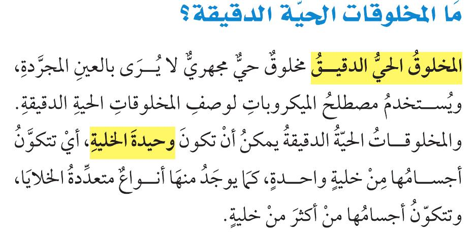
💡 الزبدة
المخلوق الحي الدقيق مخلوق مجهري لا يُرى بالعين المجردة، ويُستخدم مصطلح الميكروبات لوصفه.
قد يكون وحيد الخلية، ومنه أنواع متعددة الخلايا.
قد يكون وحيد الخلية، ومنه أنواع متعددة الخلايا.
⚠️ فخ في الاختبار
مصطلح الميكروبات يصف المخلوقات الحية الدقيقة المفيدة والضارة معًا، وليس الضارة فقط.
ص٩٤ · ما المخلوقات الحية الدقيقة؟
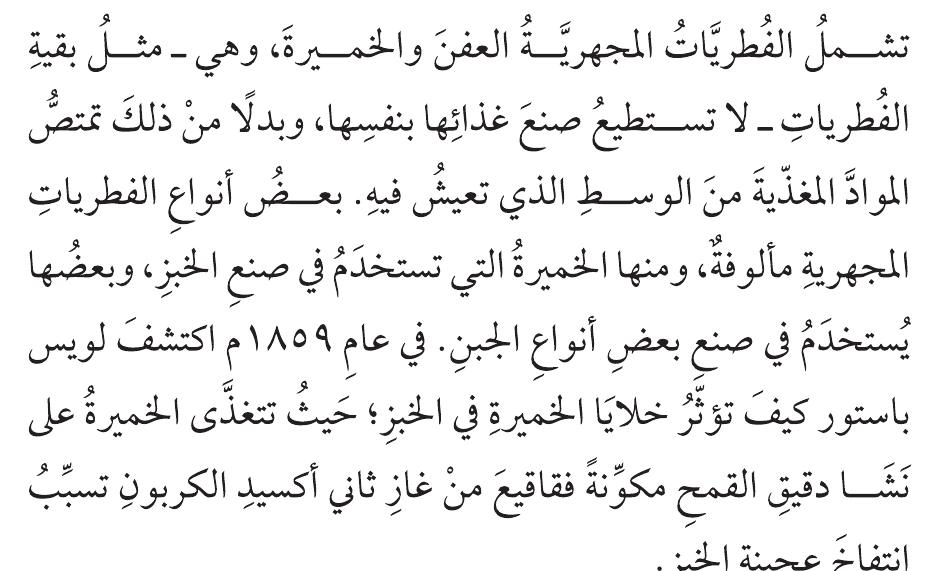
💡 الزبدة
الفطريات المجهرية تشمل العفن والخميرة، ولا تستطيع صنع غذائها بنفسها، بل تمتص المواد الغذائية من الوسط الذي تعيش فيه.
🔍 توضيح
تُستخدم الخميرة في صنع الخبز: تتغذى على نشا دقيق القمح مكوّنةً فقاقيع من غاز ثاني أكسيد الكربون تسبب انتفاخ عجينة الخبز. وقد اكتشف ذلك لويس باستور عام ١٨٥٩م.
ص٩٤ · ما المخلوقات الحية الدقيقة؟
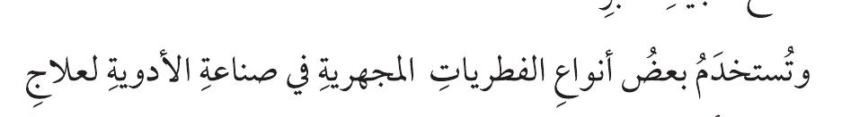
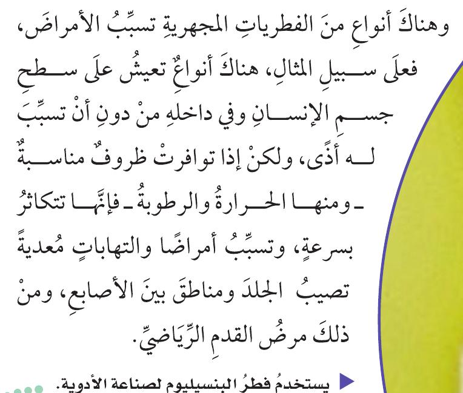
⚖️ انتبهي للفرق
فطريات مفيدة
الخميرة في صنع الخبز وبعض أنواع الجبن
صناعة الأدوية، ومنها فطر البنسيليوم
فطريات ضارة
تسبب أمراضًا والتهابات معدية تصيب الجلد ومناطق بين الأصابع
مثل مرض القدم الرياضي
🔍 توضيح
بعض الفطريات تعيش على جسم الإنسان دون أذى، ولكن إذا توافرت ظروف مناسبة، ومنها الحرارة والرطوبة، تتكاثر بسرعة وتسبب الأمراض.
ص٩٥ · الطلائعيات والبكتيريا والبدائيات
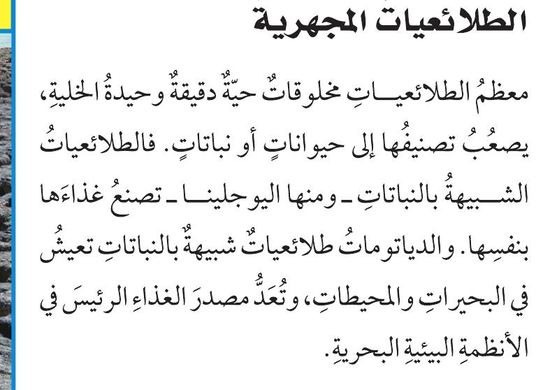
💡 الزبدة
الطلائعيات مخلوقات حية دقيقة وحيدة الخلية، يصعب تصنيفها إلى حيوانات أو نباتات.
الطلائعيات الشبيهة بالنباتات، ومنها اليوجلينا، تصنع غذاءها بنفسها. والدياتومات تعيش في البحيرات والمحيطات، وتعدّ مصدر الغذاء الرئيس في الأنظمة البيئية البحرية.
الطلائعيات الشبيهة بالنباتات، ومنها اليوجلينا، تصنع غذاءها بنفسها. والدياتومات تعيش في البحيرات والمحيطات، وتعدّ مصدر الغذاء الرئيس في الأنظمة البيئية البحرية.
ص٩٥ · الطلائعيات والبكتيريا والبدائيات
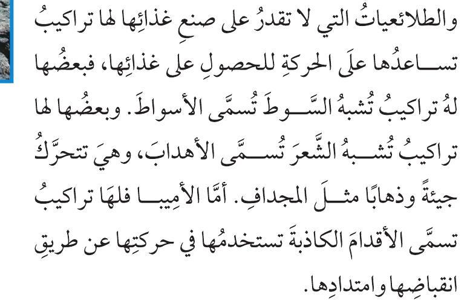
⚖️ تراكيب الحركة
السوط
تراكيب تشبه السوط
الأهداب
تراكيب تشبه الشعر تتحرك جيئة وذهابًا
البراميسيوم
الأقدام الكاذبة
تنقبض وتمتد
الأميبا
ص٩٥ · الطلائعيات والبكتيريا والبدائيات
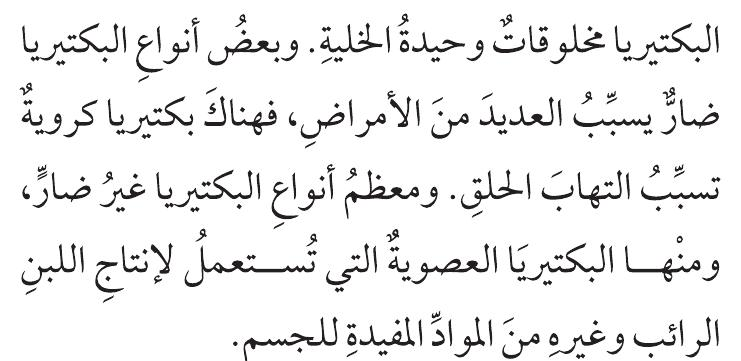
⚖️ انتبهي للفرق
بكتيريا ضارة
بكتيريا كروية تسبب التهاب الحلق
بكتيريا غير ضارة
البكتيريا العضوية لإنتاج اللبن الرائب وغيره
ص٩٥ · الطلائعيات والبكتيريا والبدائيات
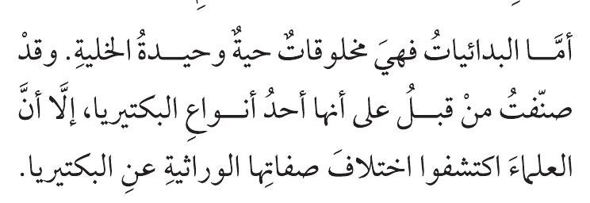
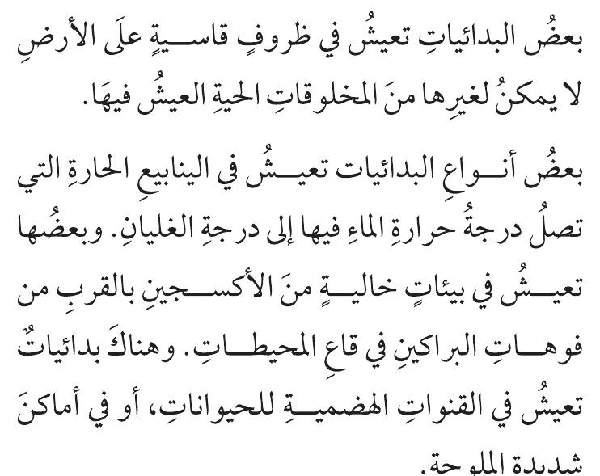
💡 الزبدة
البدائيات وحيدة الخلية، صُنفت قديمًا على أنها نوع من البكتيريا، ثم اكتشف العلماء اختلاف صفاتها الوراثية.
تعيش في ظروف قاسية: الينابيع الحارة، وبيئات خالية من الأكسجين، والقنوات الهضمية للحيوانات، والأماكن شديدة الملوحة.
تعيش في ظروف قاسية: الينابيع الحارة، وبيئات خالية من الأكسجين، والقنوات الهضمية للحيوانات، والأماكن شديدة الملوحة.
ص٩٥ · الطلائعيات والبكتيريا والبدائيات
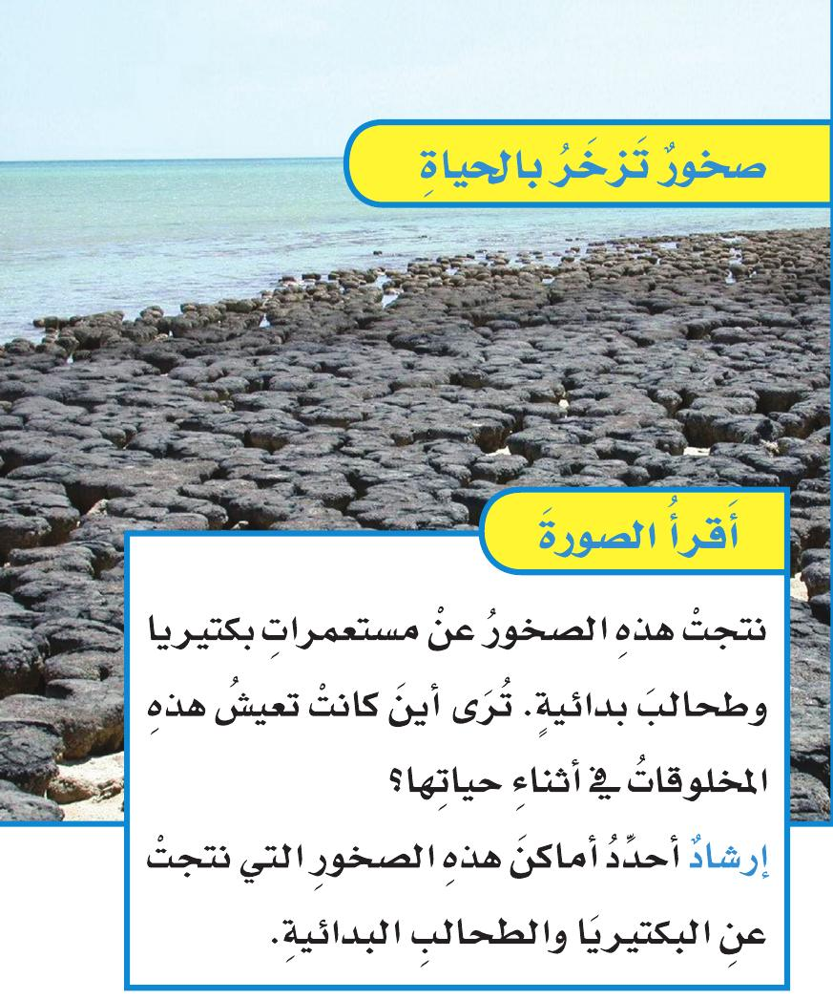
✍️ حلّ «أقرأ الصورة»اضغطي لتري الإجابة
كانت تعيش في الماء؛ فهذه الصخور على شاطئ البحر.
ص٩٥ · الطلائعيات والبكتيريا والبدائيات
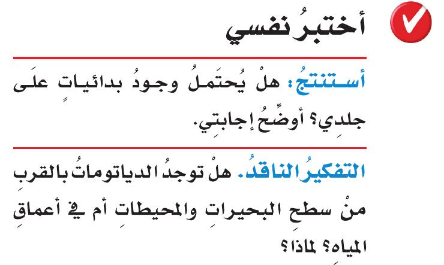
✍️ حلّ «أختبر نفسي»اضغطي لتري الإجابة
أستنتج: نعم؛ لأن بعض البدائيات تعيش في القنوات الهضمية للحيوانات، فهي قادرة على العيش في أماكن مختلفة.
التفكير الناقد: قرب السطح؛ لأنها شبيهة بالنباتات تصنع غذاءها بنفسها، فتحتاج إلى ضوء الشمس.
التفكير الناقد: قرب السطح؛ لأنها شبيهة بالنباتات تصنع غذاءها بنفسها، فتحتاج إلى ضوء الشمس.
ص٩٦ · كيف تتكاثر المخلوقات الحية الدقيقة؟
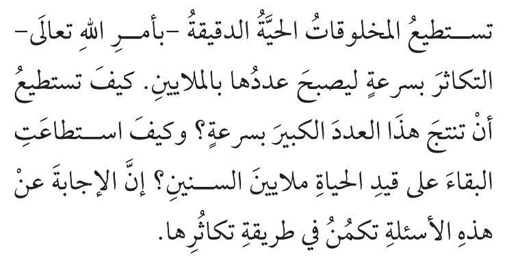
💡 الزبدة
تستطيع المخلوقات الحية الدقيقة التكاثر بسرعة ليصبح عددها بالملايين، وهذا سر بقائها ملايين السنين.
ص٩٦ · كيف تتكاثر المخلوقات الحية الدقيقة؟
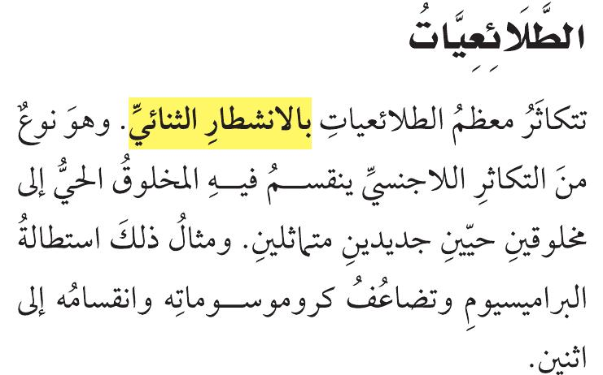
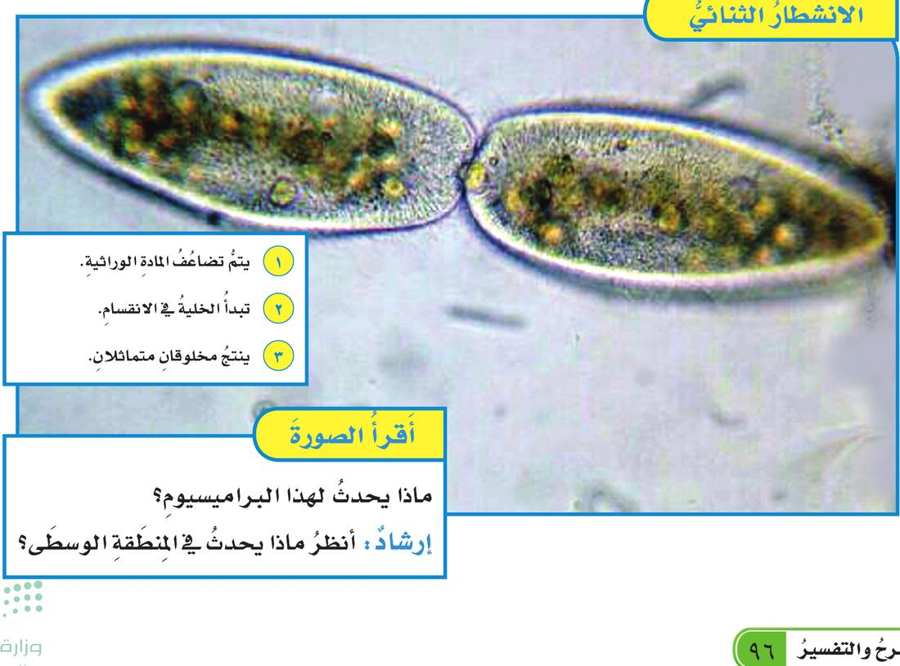
💡 الزبدة
الانشطار الثنائي: تكاثر لاجنسي ينقسم فيه المخلوق الحي إلى مخلوقين جديدين متماثلين، ومثاله البراميسيوم.
🔍 خطوات الانشطار
١- تتضاعف المادة الوراثية.
٢- تبدأ الخلية في الانقسام.
٣- ينتج مخلوقان متماثلان.
٢- تبدأ الخلية في الانقسام.
٣- ينتج مخلوقان متماثلان.
✍️ حلّ «أقرأ الصورة»اضغطي لتري الإجابة
يستطيل البراميسيوم وتتضاعف كروموسوماته، ثم ينقسم إلى اثنين من المنطقة الوسطى.
ص٩٦ · كيف تتكاثر المخلوقات الحية الدقيقة؟
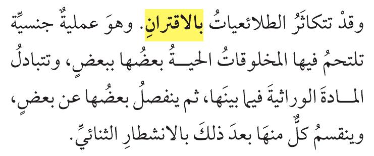
💡 الزبدة
الاقتران: عملية جنسية تلتحم فيها المخلوقات الحية بعضها ببعض، وتتبادل المادة الوراثية، ثم ينفصل بعضها عن بعض، وتنقسم كل منها بالانشطار الثنائي.
ص٩٦ · كيف تتكاثر المخلوقات الحية الدقيقة؟
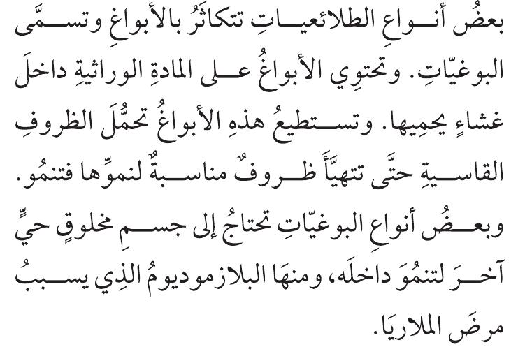
💡 الزبدة
بعض الطلائعيات تتكاثر بالأبواغ وتسمى البوغيات. تحتوي الأبواغ على المادة الوراثية داخل غشاء يحميها، وتتحمل الظروف القاسية حتى تتهيأ ظروف مناسبة لنموها.
🔍 توضيح
بعض البوغيات تحتاج إلى جسم مخلوق حي آخر لتنمو داخله، ومنها البلازموديوم الذي يسبب مرض الملاريا.
ص٩٧ · تكاثر الفطريات والبكتيريا
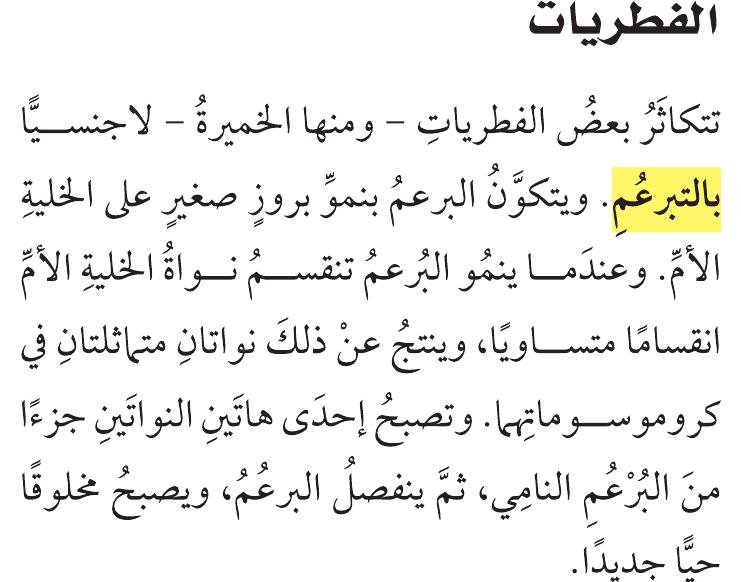
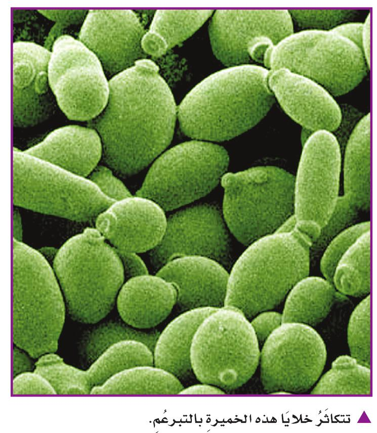
💡 الزبدة
التبرعم: تتكاثر بعض الفطريات، ومنها الخميرة، لاجنسيًا. يتكون البرعم بنمو بروز صغير على الخلية الأم، وتنقسم النواة انقسامًا متساويًا، فتصبح إحدى النواتين جزءًا من البرعم، ثم ينفصل البرعم ويصبح مخلوقًا حيًا جديدًا.
ص٩٧ · تكاثر الفطريات والبكتيريا
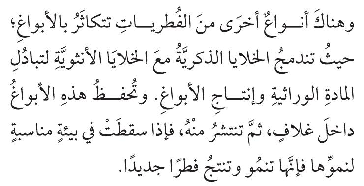
🔍 توضيح
هناك فطريات تتكاثر بالأبواغ: تندمج الخلايا الذكرية مع الأنثوية لتبادل المادة الوراثية وإنتاج الأبواغ، وتُحفظ الأبواغ داخل غلاف، ثم تنتشر، وتنمو إذا سقطت في بيئة مناسبة.
ص٩٧ · تكاثر الفطريات والبكتيريا
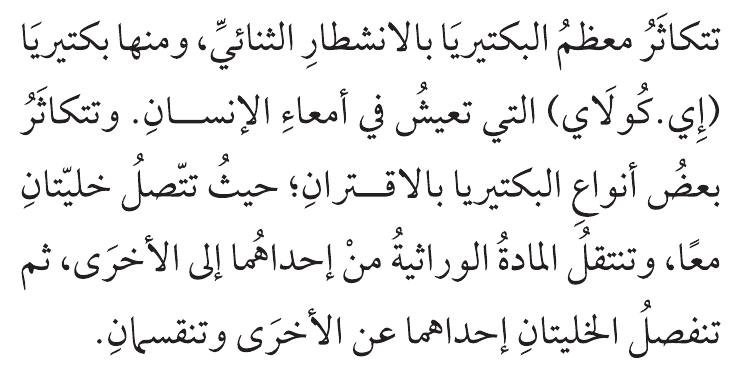
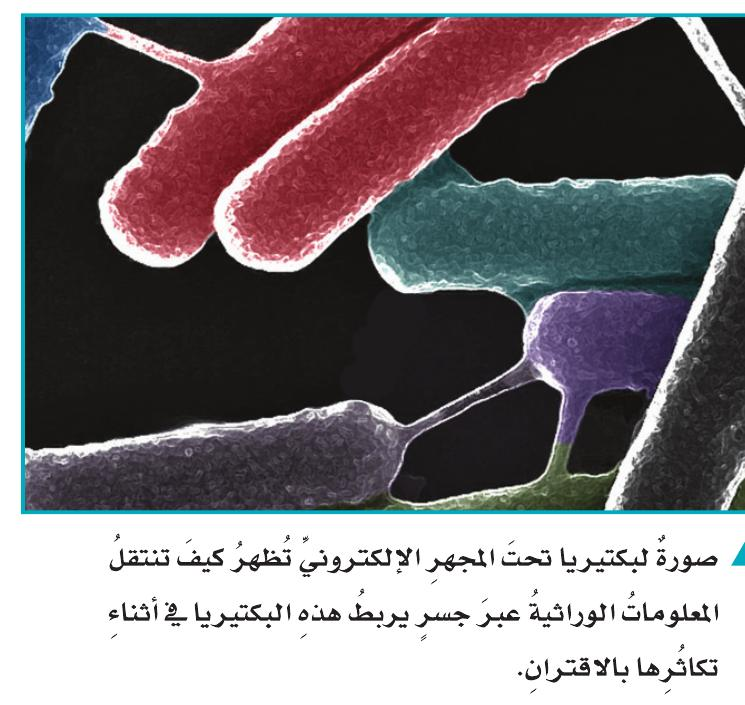
⚖️ تكاثر البكتيريا
الانشطار الثنائي
تتكاثر به معظم البكتيريا
بكتيريا (إي.كولاي) في أمعاء الإنسان
الاقتران
تتصل خليتان، وتنتقل المادة الوراثية من إحداهما إلى الأخرى عبر جسر، ثم تنفصلان وتنقسمان
بعض أنواع البكتيريا
ص٩٧ · تكاثر الفطريات والبكتيريا
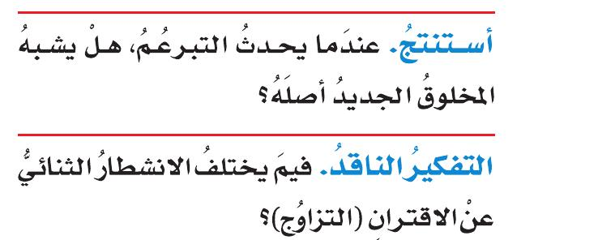
✍️ حلّ «أختبر نفسي»اضغطي لتري الإجابة
أستنتج: نعم، يشبه أصله؛ لأن النواة تنقسم انقسامًا متساويًا، فتكون في البرعم نواة مماثلة لنواة الخلية الأم.
التفكير الناقد: الانشطار الثنائي تكاثر لاجنسي ينقسم فيه المخلوق إلى مخلوقين متماثلين، أما الاقتران فعملية جنسية تتبادل فيها المخلوقات المادة الوراثية.
التفكير الناقد: الانشطار الثنائي تكاثر لاجنسي ينقسم فيه المخلوق إلى مخلوقين متماثلين، أما الاقتران فعملية جنسية تتبادل فيها المخلوقات المادة الوراثية.
ص٩٨ · ما عفن الخبز؟
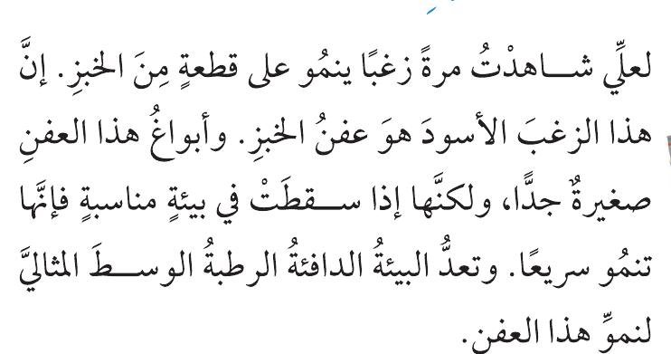
💡 الزبدة
عفن الخبز هو الزغب الأسود الذي ينمو على قطعة الخبز. أبواغه صغيرة جدًا، وتنمو سريعًا إذا سقطت في بيئة مناسبة. والبيئة الدافئة الرطبة هي الوسط المثالي لنموه.
ص٩٨ · ما عفن الخبز؟
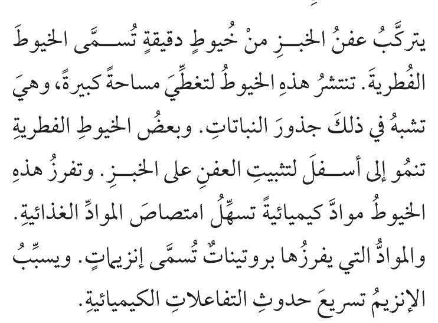
💡 الزبدة
يتركب عفن الخبز من خيوط دقيقة تسمى الخيوط الفطرية، تنتشر لتغطي مساحة كبيرة، وبعضها ينمو إلى أسفل لتثبيت العفن.
💡 الزبدة
تفرز الخيوط الفطرية مواد كيميائية تسهّل امتصاص المواد الغذائية، وهي بروتينات تسمى إنزيمات، تسرّع حدوث التفاعلات الكيميائية.
ص٩٨ · ما عفن الخبز؟
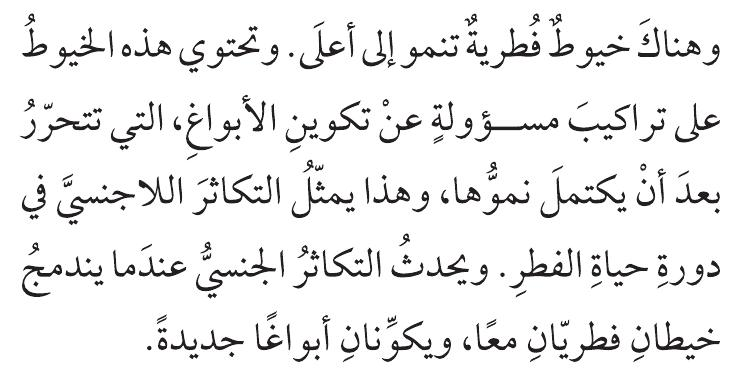
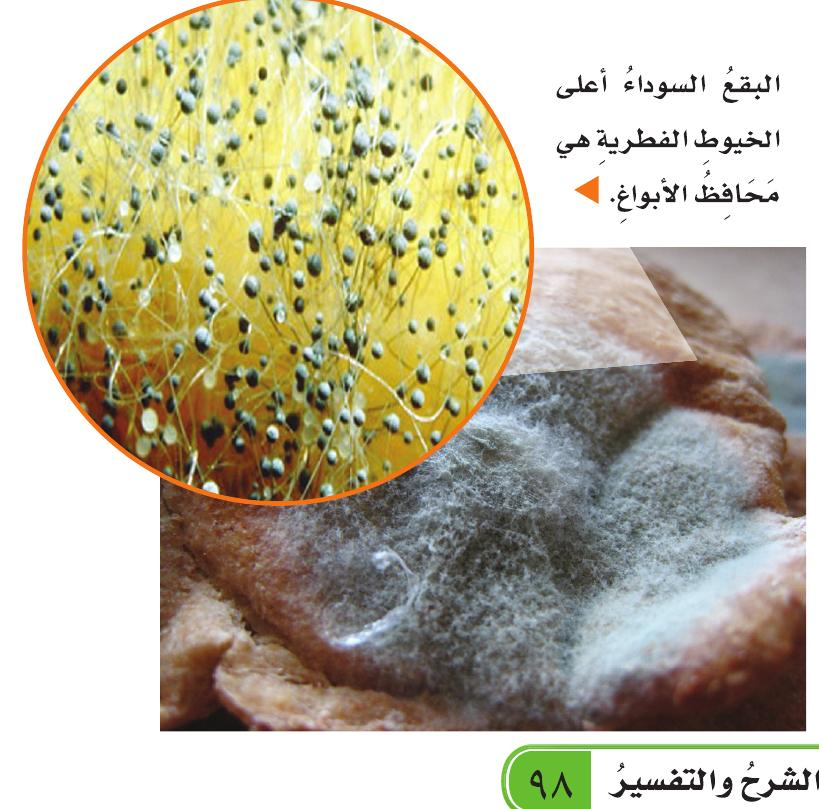
⚖️ انتبهي للفرق
التكاثر اللاجنسي في العفن
خيوط فطرية تنمو إلى أعلى، تكوّن الأبواغ في محافظ الأبواغ (البقع السوداء)
التكاثر الجنسي في العفن
يندمج خيطان فطريان معًا، ويكوّنان أبواغًا جديدة
ص٩٨ · ما عفن الخبز؟
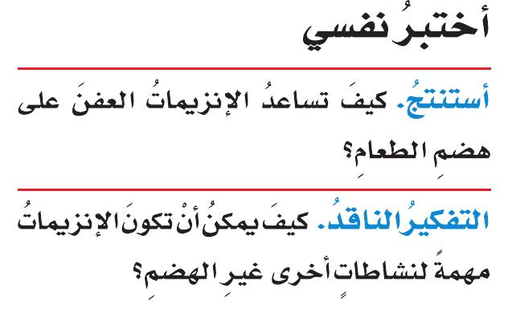
✍️ حلّ «أختبر نفسي»اضغطي لتري الإجابة
أستنتج: تفرز الخيوط الفطرية الإنزيمات فتسهّل امتصاص المواد الغذائية من الخبز.
التفكير الناقد: لأن الإنزيمات تسرّع حدوث التفاعلات الكيميائية.
التفكير الناقد: لأن الإنزيمات تسرّع حدوث التفاعلات الكيميائية.
📌 الخلاصة · خريطة المفاهيم
🔬 المخلوقات الحية الدقيقةمجهرية · الميكروبات
⬇منها
🧫 أنواعهافطريات مجهرية · طلائعيات · بكتيريا · بدائيات
⬇وتبقى لأنها تتكاثر بسرعة
➗ تكاثرهالاجنسي وجنسي
تكاثر لاجنسي
- الانشطار الثنائي
- التبرعم (الخميرة)
- الأبواغ
تكاثر جنسي
- الاقتران
- اندماج خيطين فطريين
📌 الخلاصة · المخلوقات الدقيقة: مَن يفعل ماذا؟ (١)
🍄الفطريات المجهرية (العفن والخميرة)
الغذاءلا تصنع غذاءها، تمتصه من الوسط الذي تعيش فيه
التكاثرالخميرة: التبرعم
عفن الخبز: الأبواغ، واندماج خيطين فطريين
عفن الخبز: الأبواغ، واندماج خيطين فطريين
🦠الطلائعيات
الغذاءالشبيهة بالنباتات (اليوجلينا، الدياتومات) تصنع غذاءها
الحركةالسوط، الأهداب (البراميسيوم)، الأقدام الكاذبة (الأميبا)
التكاثرالانشطار الثنائي، الاقتران، والبوغيات بالأبواغ
📌 الخلاصة · المخلوقات الدقيقة: مَن يفعل ماذا؟ (٢)
🧫البكتيريا
ما يميزهاوحيدة الخلية، ومعظمها غير ضار
التكاثرمعظمها: الانشطار الثنائي
بعضها: الاقتران
بعضها: الاقتران
🌋البدائيات
ما يميزهاتعيش في ظروف قاسية: الينابيع الحارة، الأماكن شديدة الملوحة، بيئات بلا أكسجين
📌 الخلاصة · لا تخلطي بينها
الانشطار الثنائي
نوعهلاجنسي
كيف؟ينقسم المخلوق إلى مخلوقين متماثلين
مثالالبراميسيوم، البكتيريا
التبرعم
نوعهلاجنسي
كيف؟بروز صغير ينمو على الخلية الأم ثم ينفصل
مثالالخميرة
الاقتران
نوعهجنسي
كيف؟يلتحم مخلوقان ويتبادلان المادة الوراثية
مثالبعض البكتيريا والطلائعيات
📌 الخلاصة · لا تخلطي بينها
الطلائعيات
خلاياهامعظمها وحيدة الخلية
تذكّرياليوجلينا، الدياتومات، الأميبا، البراميسيوم
البكتيريا
خلاياهاوحيدة الخلية
تذكّريمعظمها غير ضار
البدائيات
خلاياهاوحيدة الخلية
تذكّريتعيش في ظروف قاسية
📌 الخلاصة · أهم النقاط
- المخلوقات الحية الدقيقة مجهرية، ومنها الفطريات المجهرية والطلائعيات والبكتيريا والبدائيات.
- الفطريات المجهرية لا تصنع غذاءها؛ منها مفيد كالخميرة والبنسيليوم، ومنها ما يسبب الأمراض.
- الطلائعيات تتحرك بالسوط أو الأهداب أو الأقدام الكاذبة، والبدائيات تعيش في ظروف قاسية.
- التكاثر اللاجنسي: الانشطار الثنائي والتبرعم والأبواغ. والجنسي: الاقتران.
- عفن الخبز خيوط فطرية تفرز الإنزيمات، وينمو في البيئة الدافئة الرطبة.
🧠 اختبري نفسك · ١ من ٤
كيف تتكاثر الخميرة لاجنسيًا؟
✅ الجوابفكّري ثم اضغطي
بالتبرعم.
🧠 اختبري نفسك · ٢ من ٤
ما التراكيب التي تستخدمها الأميبا في حركتها؟
✅ الجوابفكّري ثم اضغطي
الأقدام الكاذبة.
🧠 اختبري نفسك · ٣ من ٤
أيها ليس من أشكال التكاثر اللاجنسي: التبرعم، الانشطار الثنائي، الاقتران، تكوين الأبواغ؟
✅ الجوابفكّري ثم اضغطي
الاقتران؛ لأنه عملية جنسية.
🧠 اختبري نفسك · ٤ من ٤
ما التركيب الذي يفرز الإنزيمات في عفن الخبز؟
✅ الجوابفكّري ثم اضغطي
الخيوط الفطرية.
🌟
أحسنتِ!
أنهيتِ مذاكرة الدرس. الآن جاء دور التحديات، وتذكّري: أول محاولة هي المحسوبة 🎯
🎮 انتقلي إلى التحديات📄 الدرس ملف PDF